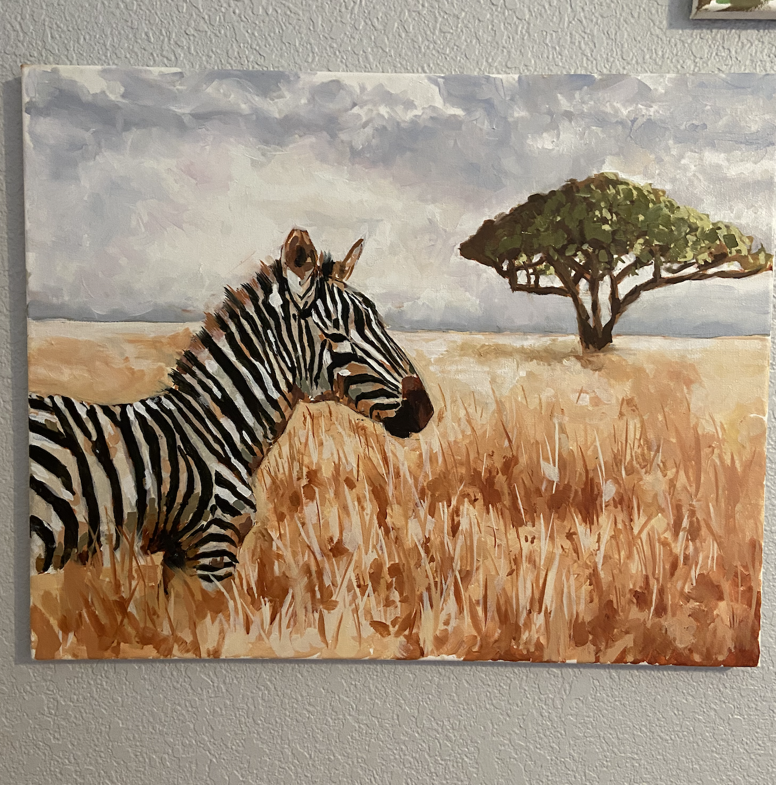
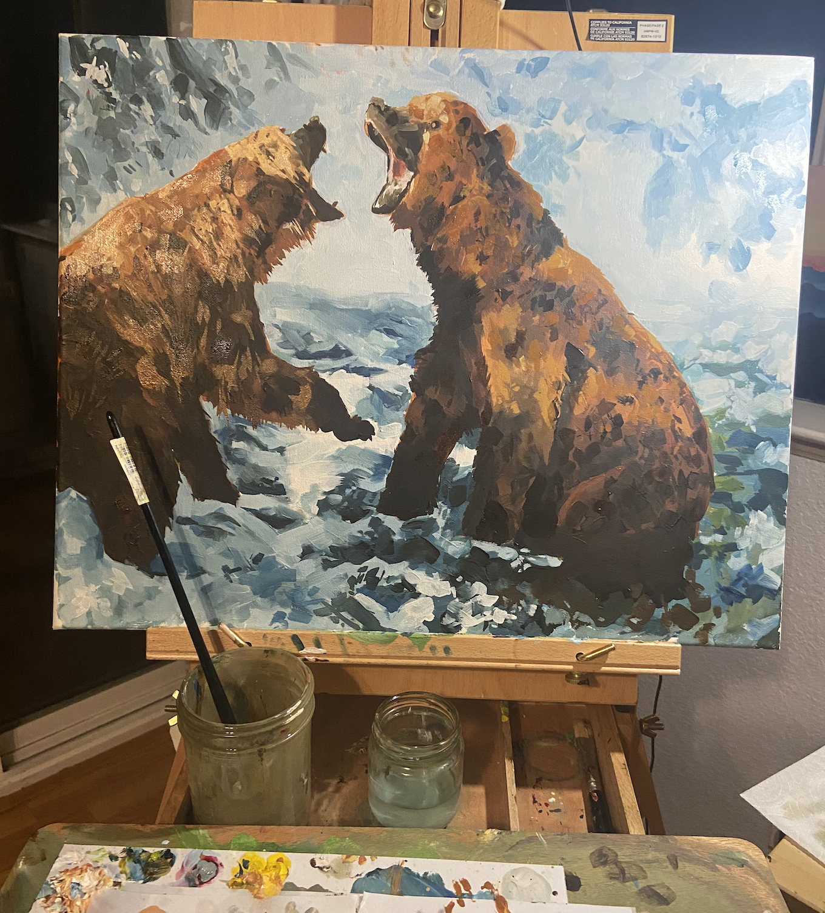
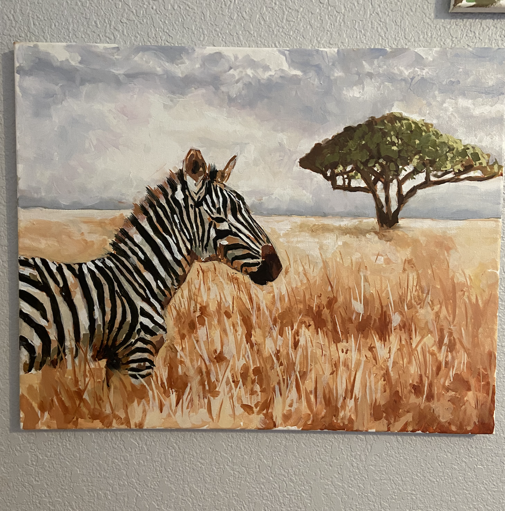
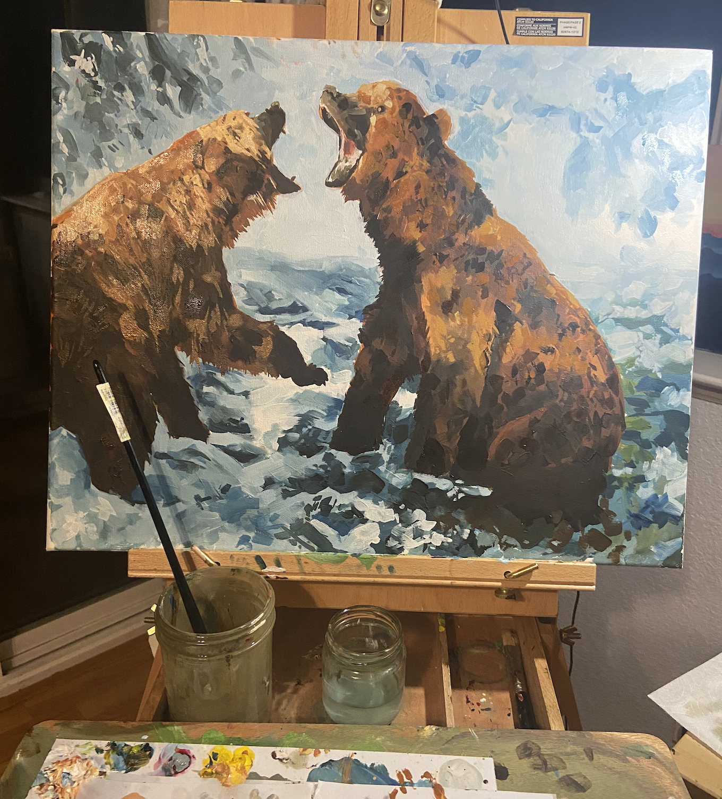

 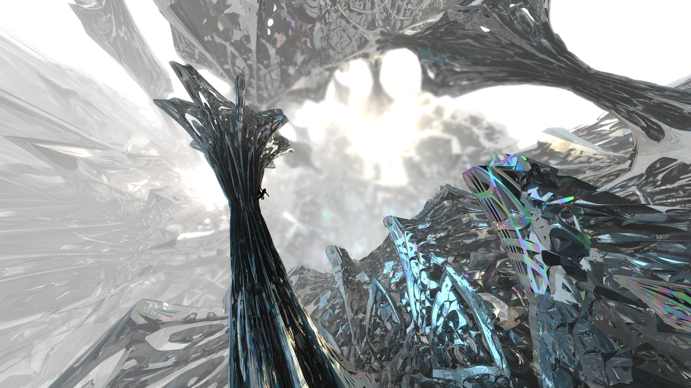
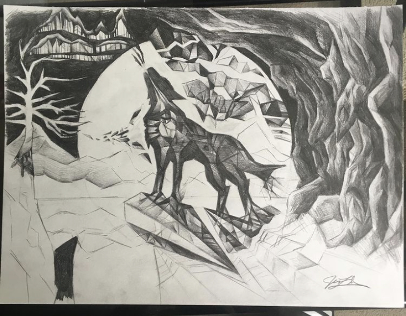
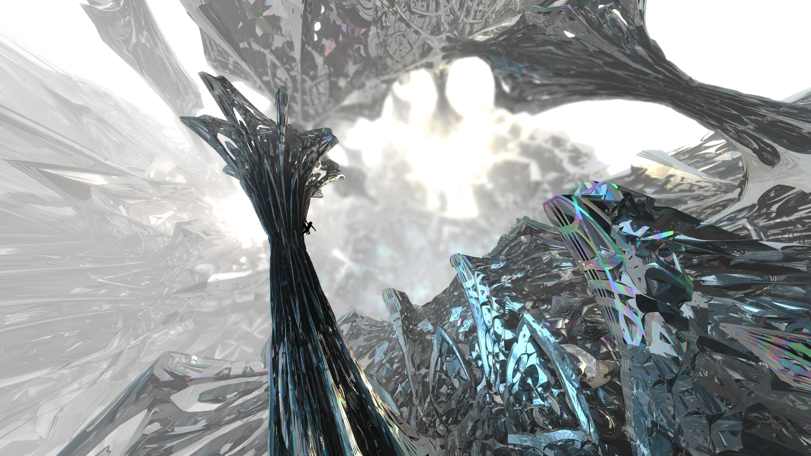
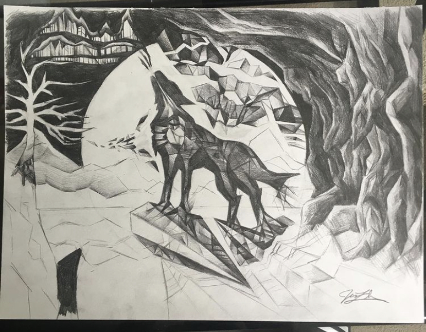
Linkedin | Github | Resume | Instagram
Hello there! I’m a 3rd-year undergraduate at UC Berkeley double majoring in Computer Science and Physics. I’ve mentored students as an academic intern in Berkeley classes CS 61BL and CS 70, and I’ve been a marketing officer and graphic designer for the Berkeley IEEE student branch.
Since middle school, I’ve always been interested in computer graphics, image processing, and simulations, and also the applications of machine learning to them all. I am particularly interested in algorithms pertaining to optics, fluid mechanics, pattern generation, and protein folding.
Outside of study and work, I’ve learned piano and cello from a young age and had opportunities to perform across the world, and I’ve also practiced oil painting for a few years. Now I just casually produce music and paint, but I’m looking for new ways to bring computation into the creative, artistic process. I am currently developing novel algorithms for CGI.
I love challenging projects in which I can apply every nook and cranny of my studies. Regardless of whether it’s art or science, I am always bridging the gap between different pieces of knowledge and experiences, so I can find new angles from which I will tackle my problem or towards where I will push my skills.
My current interests in computer graphics are Perlin noise tuning and stochastic-based Metropolis simulations. I've also dabbled in JavaScript game dev in high school.
I've done graphic design for many occassions, including making stickers for EE/CS classes at Cal, IEEE, and my fraternity.
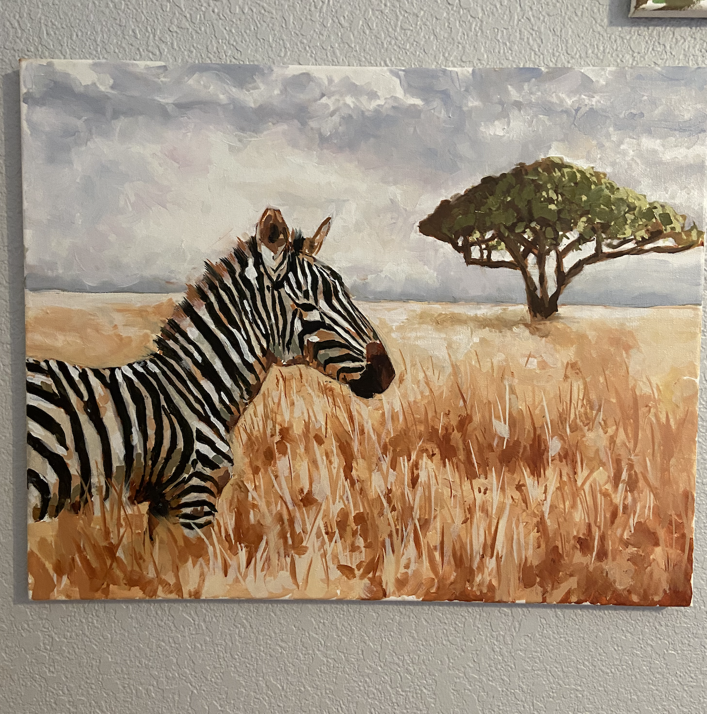
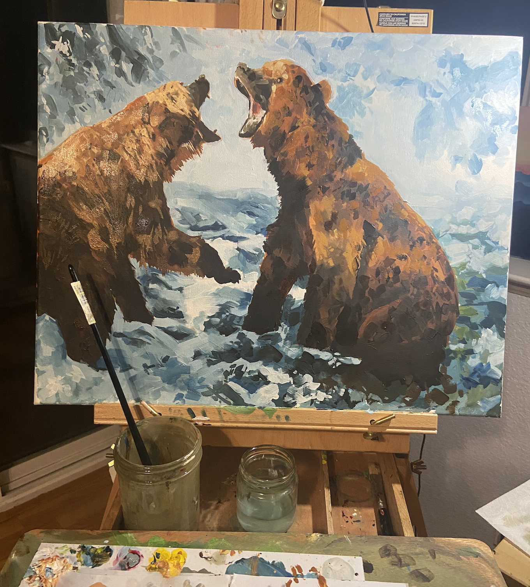
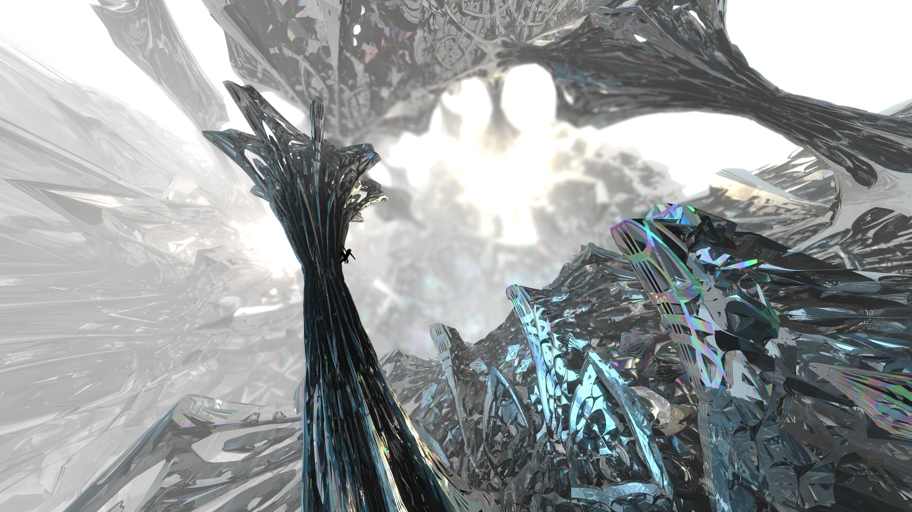
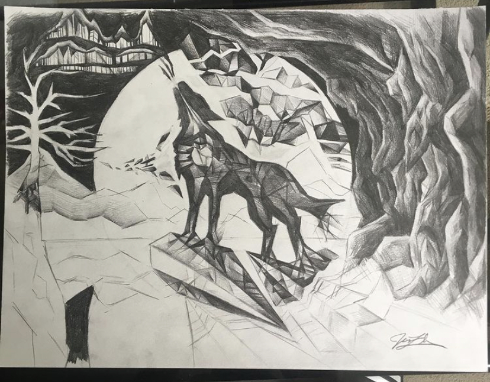
 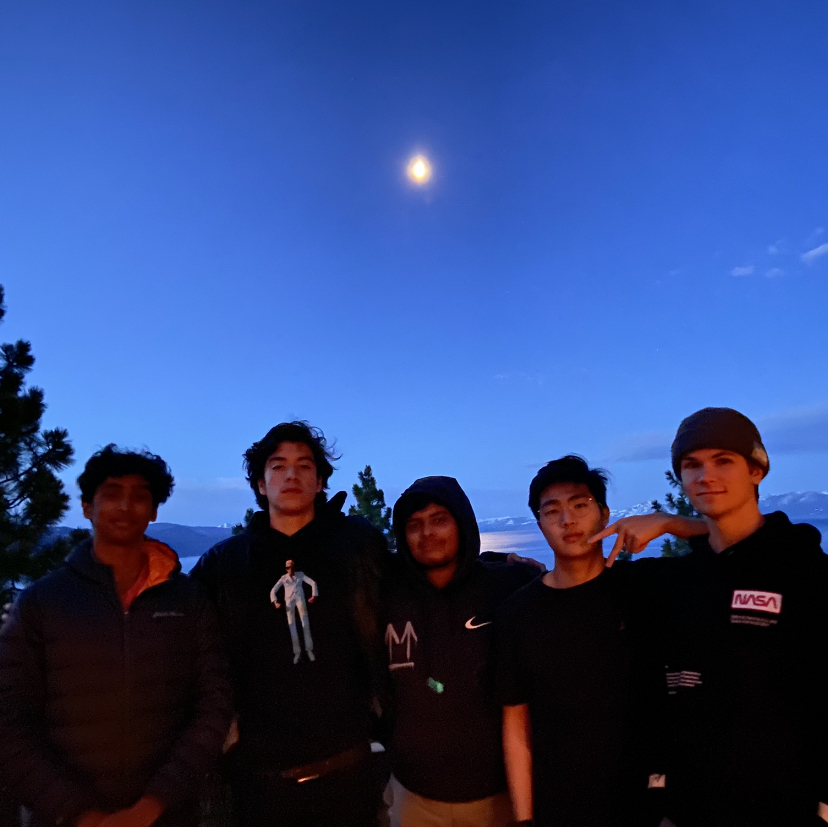
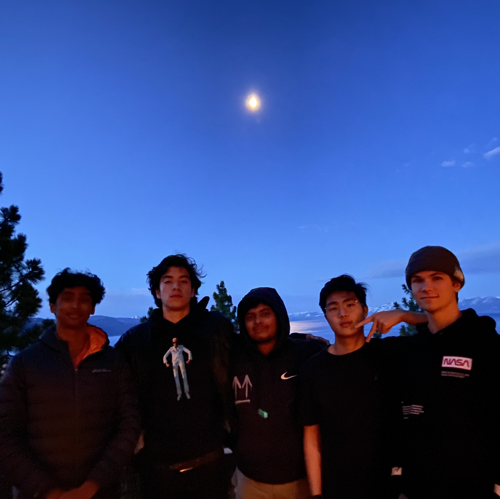